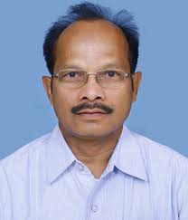

Civil Engineering
H.O.D(Head Of the Department)
Dr. M. Venu Gopal, presently professor and head of Civil Engineering, joined this college on 11th January, 1988 as assistant professor after working as design engineer for one year in Krishna Sagar & Associates, Hyderabad. He graduated in Civil Engineering from Bangalore University in 1984, and M.Tech in Industrial Engineering and Management from Indian School of Mines, IIT Dhanbad, M.E in Structural Engineering from University College of Engineering, Osmania University. He is doctorate in Civil Engineering with a research topic in construction Management. He taught Structural Engineering subjects, Construction Management, Entrepreneurship at Undergraduate level in our college, Construction Project Planning, Construction Finance, Quantitative Methods in Construction Industry at Post graduate level in University Engineering College, Osmania University. He bagged best teacher award three times in the college. His area of interest includes Uncertainty and Risk in Construction Projects, Uncertainty quantification, Working Capital Requirements in Construction industry, infrastructure finance, Resource Planning, Quantitative Methods in Construction Industry, Structural analysis and Design. He has done structural analysis and design of many projects on consultancy basis. These projects include multi-storeyed residential, commercial projects, hospitals and pharmaceutical industries. He has done consultancy works of GHMC, P.W.D as third party consultant. He has got six research papers at national and international level.
Civil Engineering is a core field of engineering which deals with entire infrastructure that includes Buildings, Water supply and Sanitation, Irrigation facilities and Transportation facilities. The academic program includes Planning, Analysis, Design and maintenance of the above infrastructural components.
The Department of Civil Engineering of MVSR Engineering College was started in the year 1981 with an annual intake of 60 undergraduate students which was gradually raised to the present annual intake of 120 students.
The department is equipped with state of art laboratory facilities in the areas of Structural Engineering, Transportation Engineering, Geotechnical Engineering, Environmental Engineering, Geology, Surveying Hydraulics and Machinery. The department has computer applications laboratory facility. The department is also equipped with library apart from a central library with several volumes and titles including journals.
The department has well qualified, experienced and committed faculty for teaching, research and consultancy works. Six (6) faculty members are with PhD in their fields of specialization from prestigious Institutions and 11 faculty members are pursuing PhD program in their own area of specialization. All other faculty members are post graduates in engineering or technology from reputed institutions and University Colleges.
The department has an ambience of high discipline with commitment, conducive for high academic learning and training. It is due to the very good academic environment and the excellent efforts of faculty and supporting staff that the students have brought laurels to the Department and Institute by securing the meritorious ranks in the university.
During the A.Y. 1994 – 95, 1995-96 First ranks among all the affiliated colleges of Osmania University were bagged by the students of MVSR Engineering College. Our students were securing top ranks (with in 10) every year. The department has also been able to achieve a high pass percentage of passes with distinction and first class in the university examinations.
On the Placements front too, the number of students of the Civil Engineering department, who got placed, has surpassed that from several other institutes.
The department is actively involved in research and consultancy. The main areas of research include Structural Engineering. The Department regularly receives consultancy projects from GHMC and other private organizations.
The Department is accorded recognition as 3rd party quality control check by Greater Hyderabad Municipal Corporation (GHMC) for testing, verifying, approving designs and certification.
For promoting academic atmosphere the department is actively involved in organizing regularly Seminars/Symposia/Workshops for the professional development of faculty, staff and students.
B.E Civil engineering programme has been accredited by NBA (National Board of Accreditation) of AICTE during 2002, 2007 & 2013.
VISION
To nurture the Civil Engineering Student fraternity and focus in right areas so that we can contribute to the nation’s growth by providing talented and technically competent professionals while making the teaching - learning process an enjoyable experience.
MISSION
To produce an engineer who can adopt an integrated approach to various problems in Civil Engineering and judiciously use research and technology to benefit the society at large.
Mission 1:
Adopt an integrated approach to various problems in Civil Engineering
Mission 2:
Judiciously use knowledge of Civil Engineering
Mission 3:
Use latest Research and Technology
Mission 4:
Benefit the society
Program Educational Objectives (PEOs)
Program educational objectives are broad statements that describe the career and professional accomplishments that the program is preparing the graduates to achieve.
A strong foundation in mathematics, basic sciences and engineering fundamentals, to successfully compete for entry-level positions or pursue postgraduate programme in Civil Engineering and related fields.
Contemporary Civil Engineering professional skills, collection, analysis / interpretation and presentation of data, including hands-on laboratory experience, exposure to modern software, creativity, and innovation to successfully compete in the local, national and global market.
Strong communication and interpersonal skills, broad knowledge and an understanding of multicultural and global perspectives to work effectively in multidisciplinary teams, both as team members and leaders.
Integral development of the personality to deal with ethical and professional issues, taking into account the broader societal implications of civil engineering and also develop independent and lifelong learning.